Hank MacLean
ハンク・マクレーン
概要
ヘンリー "ハンク" マクレーンは、Fallout TVシリーズに登場する重要キャラクター。
ルーシーとノーム・マクレーンの父親であり、ローズ・マクレーンの夫。
2296年までVault 33の監督官を務めていたが、モルダバーの勢力によってVaultから拉致されたことがきっかけで、ルーシーがウエイストランドへ旅立つことになる。
経歴
起源
ハンクは大戦前に生まれ、Vault-Tec社でバーブ・ハワードのエグゼクティブ・アシスタントとしてキャリアを築いた。
バーブの夫であるクーパー・ハワード（後のグール）の映画ファンであり、彼に会ってサインをもらうことをずっと夢見ていた。
ステフ・ハーパーと出会い、ラスベガスで結婚。バッド・アスキンスのプログラム「バッズ・バッズ」にステフを紹介した。
ある時点で、ハンクは密かにエンクレイヴの工作員となった。
エンクレイヴとの通信用Pip-Boyを形見箱に隠し持っていた。
妻のステフはエンクレイヴとのつながりを知っていた。
大戦前夜、ハンクは「バッズ・バッズ」のメンバーとして、サンタモニカ地下のスリー・ヴォールツの一つであるVault 31で冷凍睡眠に入り、1世紀以上眠り続けた。
Vault 33での生活
2268年8月9日に冷凍睡眠から解放され、現世代のVault住人に溶け込むためVault 33に配属された。
2271年に監督官に選出され、2296年までその役職を務めた。
ハンクの妻 — ローズ・マクレーン
スリー・ヴォールツの真の目的——Vault 31の戦前住人が「スーパー管理者」の血統を作るために、Vault 32と33の人口を繁殖プールとする計画——に従い、ハンクはVault生まれのローズと出会い、結婚。
娘ルーシーと息子ノーマンの2人の子供をもうけた。
地上への脱出
2277年頃、ローズはVault 33の水の供給が外部の誰かに流出していることに気づき、文明が地上で再興した証拠だと考えた。
しかしハンクは彼女の疑問をはねつけ、調査を禁じた。
やがてローズは子供2人を連れてVault 33を脱出。
ハンクは子供たちを危険にさらす行為だと激怒し、ベティ・ピアソンを伴って追跡。
ニュー・カリフォルニア・リパブリック（NCR）の首都シェイディ・サンズまで家族をたどりついた。
ローズはVaultへの帰還を拒否したが、ハンクは子供たちだけを連れ戻した。
そしてNCRが文明を復興させようとしていることを知ったハンクは、2283年に再び地上へ出向き、ブレイン＝コンピューター・インターフェース・チップ（ブラックボックス・チップ）を使ってNCRのキャラバン商人を洗脳。
その商人に核装置をシェイディ・サンズの中心部まで運ばせ、NCRの首都を核攻撃で壊滅させた。
ハンクは子供たちは助けたが、ローズは意図的に置き去りにした。
ローズは爆発の残留放射線によりグール化したと推測される。
ハンクは子供たちに「母さんは'77年の疫病で亡くなった」と嘘をついた。
監督官としての日々
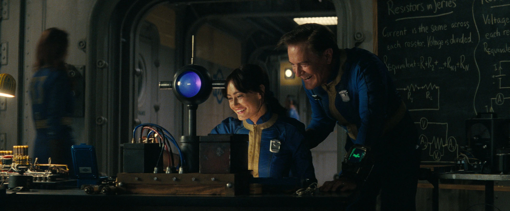
ルーシーとハンクの科学実験
Vault 33に戻ったハンクは監督官の職務を続け、子供たちを育てた。
科学的スキルとコミュニケーション能力を活かし、Vault 33コミュニティの「接着剤」として機能する有能な指導者だった。
映画鑑賞やガーデニング、家族読書会（『戦争と平和』や『西部戦線異状なし』）を通じて家族との時間を過ごした。
TVシリーズ シーズン1
「終わり」
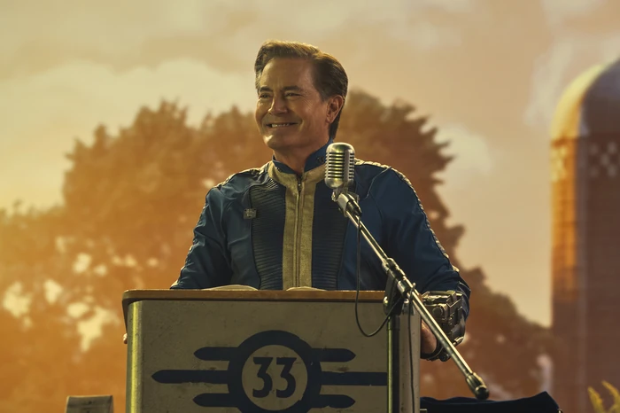
ルーシーの結婚式でスピーチするハンク
2296年、ハンクはVault 32との交易を手配し、ルーシーの結婚相手としてモンティを迎え入れた。
しかしVault 32の住人たちはレイダーの一団であることが判明し、Vault 33を襲撃。
ハンクはルーシーを守り、モンティを溺死させた。
モルダバーから曖昧な選択を迫られたハンクは、ルーシーを別室に押し込み「お前は僕にとって世界そのものだ」と告げた後、鎮静剤で眠らされ拉致された。
「始まり」
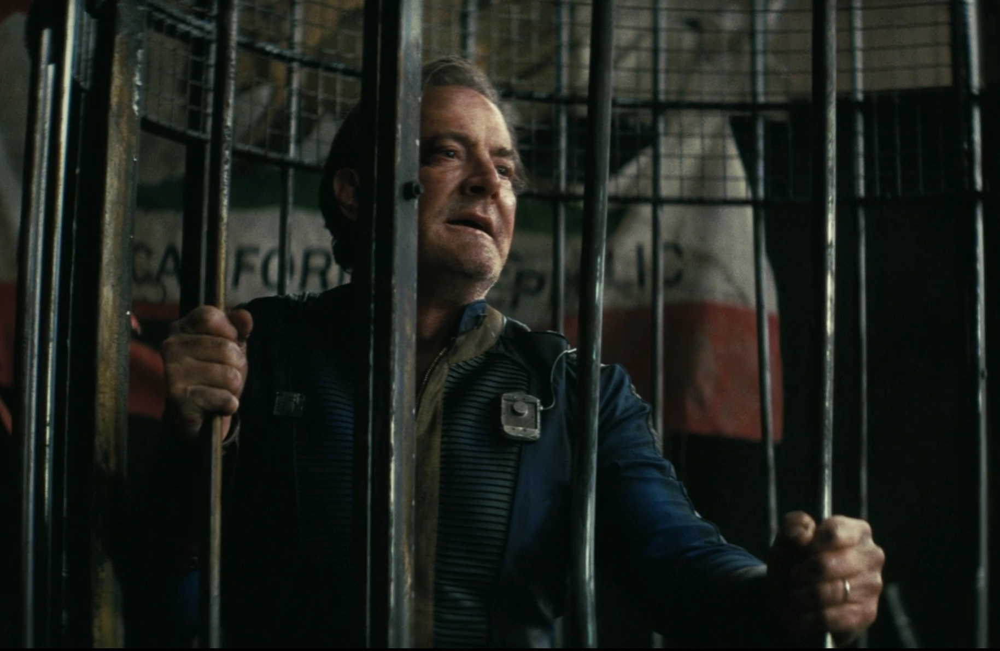
モルダバーに囚われたハンク
ルーシーがグリフィス天文台に到着し、巨大な檻に閉じ込められた父親を発見。
モルダバーがハンクの罪を暴露し、ルーシーは冷融合のコードを渡すよう要求。
ハンクは渋々応じモルダバーは冷融合を起動したが、B.O.S.が攻撃を開始した。
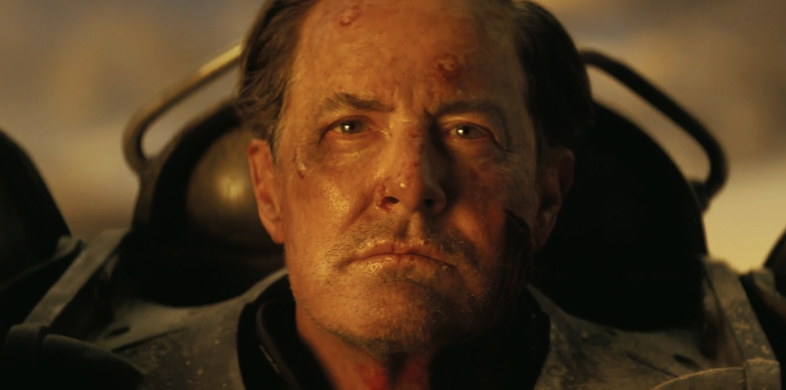
パワーアーマーでモハビへ逃走するハンク
マキシマスに解放されたハンクは、T-60パワーアーマーを装着して逃走。
ルーシーに銃を向けられるも撃たないと確信し、グールの銃撃をかわしてジェットで天文台から飛び去った。
その後、モハビ・ウエイストランドの稜線から、遠くにニューベガスの街を見下ろしていた。
TVシリーズ シーズン2
「イノベーター」
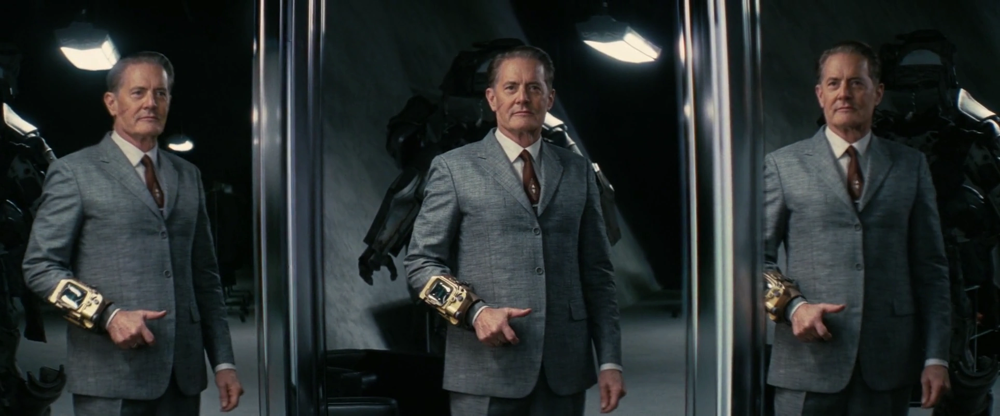
ラスベガスの管理Vaultで身支度を整えるハンク
ハンクの長い旅はVault-Tecのシンボルが刻まれた地下施設に終着した。
ターミナルへのアクセス権を確認し、コーヒーを一杯淹れてから身支度を整え、金メッキのPip-Boyを装着。
「グローバル通信」室からハム無線で「サー」と呼ぶ相手に連絡を取り、ラスベガスに到着した旨とブラックボックス・チップの技術を完成させる野望を報告した。
「ゴールデンルール」
フラッシュバックで、2283年のシェイディ・サンズ核爆破の全容が描かれる。
確認を受けた直後、ハンクはVault 33の自宅の洗面台で手を洗い、鏡の中の自分を見つめていた。
娘に物語を読んでとせがまれ、日常に戻る。
現在のタイムラインでは、ハンクはブラックボックス・チップの改良実験を続けていた。
冷凍保存されたマウスや戦前の顧客スティーヴン・ウィンスロップを被験者として使い、チップの信号強度の限界をテスト。
被験者の爆死という失敗を繰り返しながらも「成功するまで何度でも試す」と冷淡に呟いた。
「ラングラー」
ハンクはラスベガス地下施設を出て、廃タコスタンドでフィスト（ロボット）とデート中の蛇油売りをバールで殴り、施設に連行。
チップの信号強度テストを行い、蛇油売りの記憶を完全消去して意思のない奴隷に変えることに成功。
「いよいよ始まりだ」と言い、計画の次の段階に着手した。
後にハンクは施設に冷凍保存された戦前の顧客——バーブ・ハワードとその娘ジェイニーを発見。
ルーシーとグールが追跡を続けていることを知り、蛇油売りを代理人として送り込んだ。
ハワード家の安全と引き換えにルーシーをVault 33に戻すよう要求。
グールはハンクの要求に応じてルーシーを鎮静銃で撃ったが、ルーシーはパワーフィストでグールをアトミック・ラングラーの窓から叩き落とし、最終的にハンクが意識を失ったルーシーを直接回収した。
「もう一人のプレイヤー」
ラスベガスの管理Vault内で、ルーシーはハンクのブラックボックス・チップ工場を発見。
ハンクは敵対する部族民、殺人者、シーザーのレギオンの兵士など、ウエイストランド中から人々を拉致・洗脳し、チップ生産の作業員に変えていた。
ハンクは「Vault風」に作られた模擬生活空間でルーシーとの食事を試みるが、『西部戦線異状なし』の読書会を再開しようとする。
派閥主義こそが苦しみの根源であり、ボトルキャップを巡って戦う人々と第一次大戦の無意味な殺戮に違いはないと持論を展開。
しかしルーシーはハサミで彼に迫り、シェイディ・サンズ破壊の罪でVault 33に連行すると宣言した。
エレベーター前でハンクは巧みにルーシーを操作し、暴力的なレギオン兵とレンジャー・ビフの衝突を演出。
ルーシーはビフを救うために不本意ながらブラックボックス起動ボタンを押さざるを得なかった。
洗脳されたレギオン兵が穏やかに変わる様子を見せ、ハンクは満足げに「クンバヤー」と呟いた。
「ハンドオフ」
ルーシーはハンクをメインフレーム（実際はダイアン・ウェルチの切断された頭部で、チップのプログラミングを提供していた）の部屋に連れて行くことに成功。
ゴルフカートの運転を教えるハンクとのやり取りの後、ルーシーはハンクをオーブンの取っ手に手錠で固定してPip-Boyを奪取。
メインフレームの破壊に向かった。
「ストリップ」
ルーシーがメインフレームを破壊した後、ハンクはオーブンから脱出し彼女と対峙。
ブラックボックス・チップの小型化に成功していたことを明かし、ルーシー自身にチップを埋め込んで洗脳する意図を露わにした。
巨大なレギオン兵にルーシーを押さえさせたが、グールが介入しレギオン兵を射殺。
グールはルーシーにナックルダスターを渡し、ハンクの運命を彼女に委ねた。
その後、ルーシーとハンクはラッキー38からニューベガス・ストリップに出た。
ハンクの首の後ろには傷跡——ルーシーが彼に小型チップを埋め込んだ証があった。
ハンクは既に洗脳済みの工作員をウエイストランド各地に送り出していたことを明かし、大戦前に書かれた命令を実行させていると告げた。
そしてルーシーに「愛している」と伝え、自らのチップを起動して全ての記憶を消去した。
空っぽの表情でカジノの階段に座るハンク。
絶望したルーシーは泣きながらハンクを抱きしめたが、ハンクはもう彼女を認識していなかった。
「顔の汚れを拭いてあげようか」と無邪気に言うハンクを残し、ルーシーは涙を流しながら歩み去った。
人物像
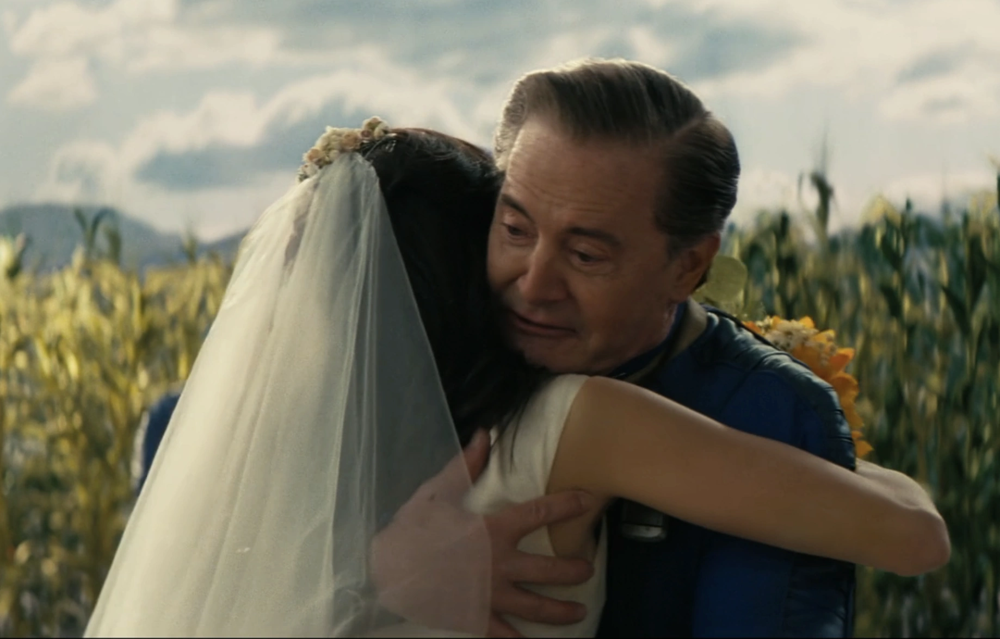
ルーシーを抱きしめるハンク
ハンク・マクレーンは旧世界のアメリカ的価値観——家族、コミュニティ、人間の品位——の体現者を自負する。
しかし真の忠誠はVault-Tecの理念に向けられており、自らの信条やVault-Tecの目的に合致しない人命や自由意志に対しては驚くほど冷淡。
Vault-Tecのミッションがよりよい社会をもたらすと本気で信じている「会社の人間」である。
NCRとシーザーのレギオンを同等の悪と見なし、NCRの高税率や拡張主義とレギオンの奴隷制・磔刑を道義的に同列に置く。
Vault-Tec以外のあらゆる派閥は排除すべき存在だと信じ、派閥主義こそがウエイストランドの苦しみの根源だと考えている。
同時にハンクは野心家であり、Vault-Tecのミッションを自分独自のやり方で実現しようとする個人主義的な傾向を持つ。
ラスベガスの管理Vaultでの活動は、組織の指示ではなく彼個人の判断によるものだった。
名言
ギャラリー
シーズン1
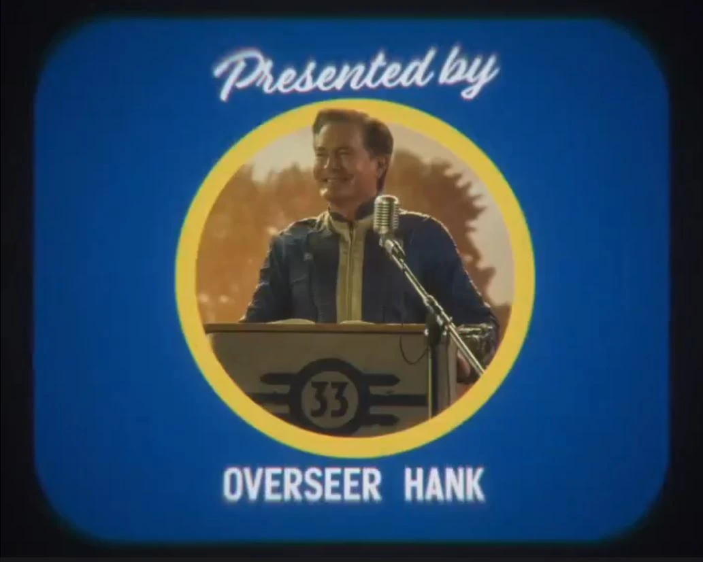
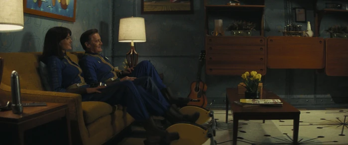
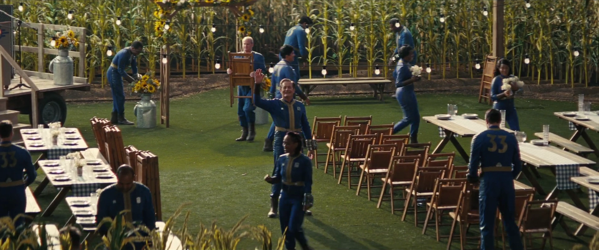
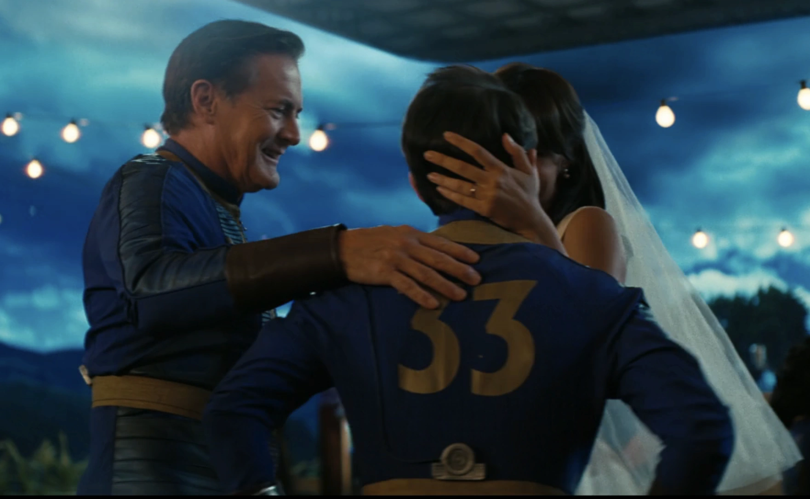
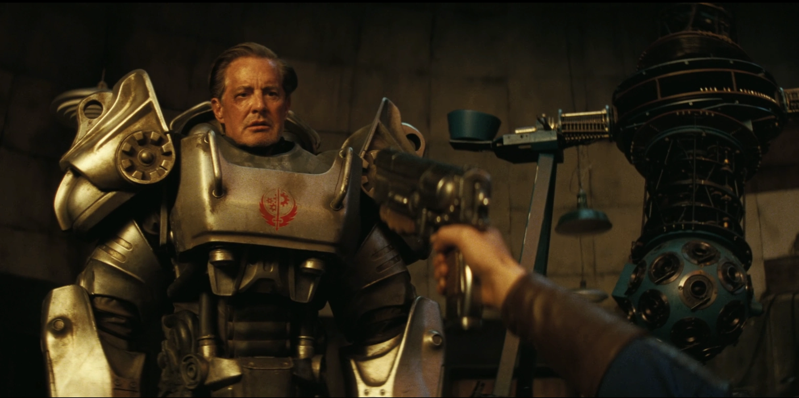
シーズン2
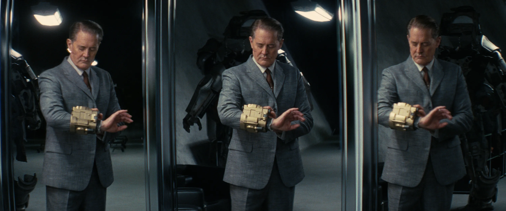
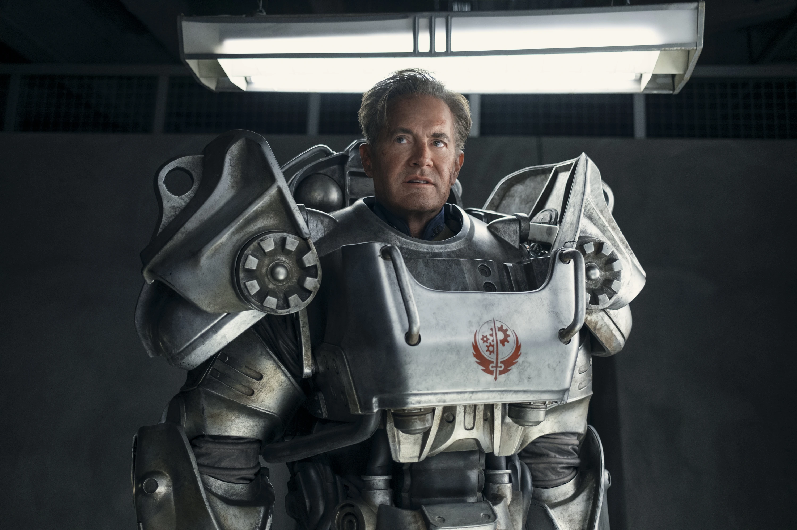
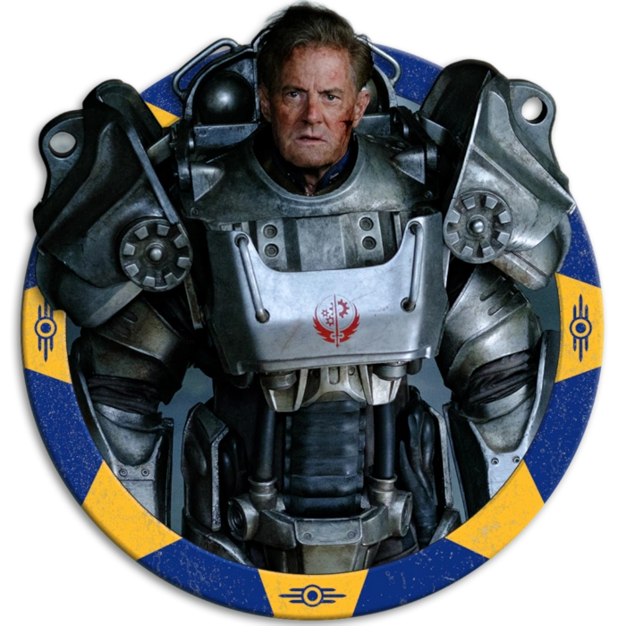
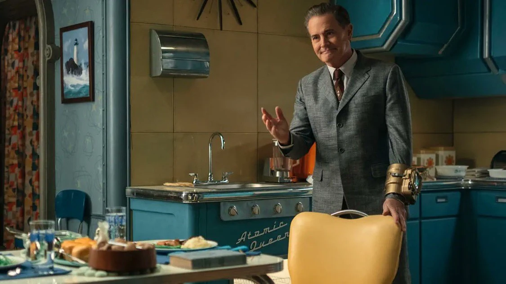
Fallout Shelter
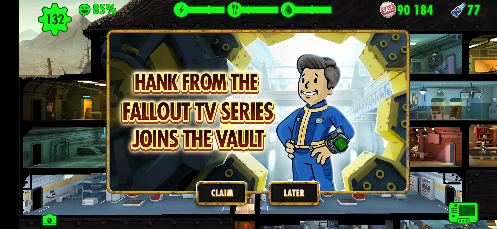
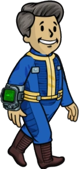
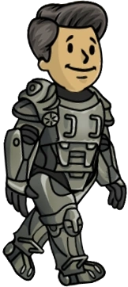
登場作品
ハンク・マクレーンはFallout TVシリーズ（シーズン1: エピソード1、6、8 / シーズン2: エピソード1、2、5、6、7、8）に登場する。
また2024年7月18日（バージョン1.18.0）以降、Fallout Shelterにも登場する。
ハンク・マクレーンはFallout TVシリーズで最も複雑な悪役だと思う。
「家族のため」「平和のため」と言いながら、その手段が核爆弾と洗脳チップという取り返しのつかないものばかり。
しかもカイル・マクラクランの演技が絶妙で、ダイナーパパ然とした温かさと冷徹なVault-Tec信者の間をシームレスに行き来する。
シーズン2での「クンバヤー」のシーンは特に秀逸。暴力的なレギオン兵をボタン一つで穏やかにして見せ、ルーシーに「ほら、こっちの方がいいだろう？」と迫る。
議論ではなく状況で説得しようとする手口が、このキャラクターの恐ろしさを端的に表している。
最後に自ら記憶を消して空っぽになるエンディングは、ルーシーにとって殺すより辛い結末だったはず。
This article was created by translating and editing Hank MacLean from Nukapedia: The Fallout Wiki.
Licensed under the Creative Commons Attribution-Share Alike License (CC BY-SA 3.0).
© Overseer Mohi's Terminal — Fallout Lore Archive
コミュニティ維持のため、寄付を受け付けております。
> COMMENTS